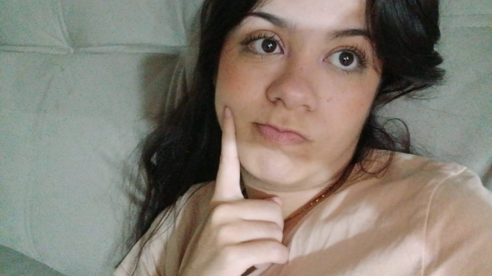

 Layane Cabral Soares é uma mulher incrível (a mais de todas), tem 18 anos,é cristã, auxiliar na congregação cristã no Brasil (ccb), cursa inglês e manicure, trabalha em uma salgateria chamada "salgateria cabral", finalizou o ensino médio, e sonha em ter seu próprio salão.
Layane é filha de Carlos Pereira Soares (cooperador de jovens do Jardim Nova Vitória) e Fernanda Cabral Soares.
Essa mulher recentemente começou a fazer academia, junto de sua familia, e aparentemente está gostando. Sua série favorita é Teen Wolf, seu filme favorito é Piratas do Caribe e rei leão 2, suas musicas favoritas são Off The races e white mustang, seu livro favorito é Percy Jackson, adora naruto e sua personagem favorita é a sakura. Layane também ama fazer artesanatos, como crochê, bonecos de biscuit, entre mais coisas.
Layane é uma mulher sem palavras, uma mulher tão invrível que é difícil descreve-la ♡ .
Simplesmente a melhor mulher do mundo.
clique nos links abaixo para saber mais.